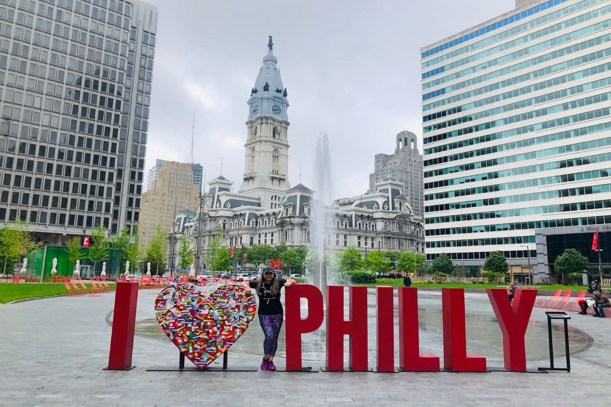

Philadelphia has a large selection of food options to choose from.
You can find any food you are craving in Philadelphia. There are many coffee shops and bakeries, perfect grabbing food in the morning. Of course if you are in Philadelphia you have to get a cheesesteak. For dinner, you could get Italian, Mexican, Asian, or just about any other cuisine you desire. There are also various food festivals throughout the year. One of the best food festivals is the StrEAT Food Truck Festival.
Philadelphia has activities and events that suit all interests.
There are events for all in the city of Philadelphia. A key location to visit is the Philadelphia Museum of Art. There are also many parks to go to for a walk or a relaxing evening. Philadelphia also has some of the best concert venues, which is perfect for music lovers.
"Click here to go to page 1!" 